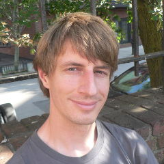

Joachim Breitner
I’m a post-doctoral researcher at the University of Pennsylvania, working under Stephanie Weirich. As such, I’m a proud member of the PLClub.
 Dr. Joachim BreitnerProgramming Languages Group
Levine Hall 514
University of Pennsylvania
3330 Walnut Street
Philadelphia, PA 19104
USA
http://cis.upenn.edu/~joachim
joachim@cis.upenn.edu
My Name
If you want, you can try to pronounce my name correctly: It is yo-AH-kheem, where the kh is pronounced as in Scottish “loch”. For those who can read IPA: [ˈjoːaxɪm] describes it quite well.
Research
My research interests revolve around functional programming, especially with Haskell, and interactive theorem proving, in particular with Isabelle.
I maintain a list of publications, including talks, on my personal website. You might prefer the shorter listing on DBLP or on Google Scholar.
Teaching
In Fall 2016, I will be giving the CIS 194 Haskell mini course. Come and learn Haskell with me!
Before coming to Penn, I tought at the computer science department (see list) and the math department (see list).
Activities
- Program Committee Member of Haskell Symposium 2017.
- Program Committee Chair of Haskell in Leipzig 2016.
- Program Committee Member of Haskell Implementors Workshop 2016.
- Reviewer for AMS
- Reviewer for the NSF
- Member of the Haskell Core Libraries Committee
- Member of the GHC Steering Committee
Projects
Some cool projects of mine that you should check out include the Incredible Proof Machine. My personal website lists more projects of mine, in particular the less academical ones.
Before coming to Philadelphia, I was working in the programming paradigms group of Gregor Snelting at the Karlsruhe Institute of Technology, and still have a homepage there.